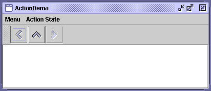
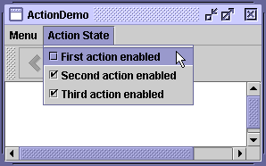
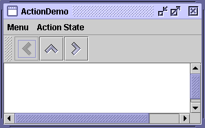

Feedback Form
|
|
Start of Tutorial > Start of Trail > Start of Lesson |
Search
Feedback Form |
If you have two or more components that perform the same function, consider using an
Actionobject to implement the function. An
Actionobject is an action listenerthat provides not only action-event handling, but also centralized handling of the state of action-event-firing components such as tool bar buttons
You typically attach an action to a component using the
setActionmethod. Here's what happens whensetActionis invoked on a component:Here's an example of creating a tool-bar button and menu item that perform the same function:
- The component's state is updated to match the state of the
Action. For example, if theAction's text and icon values were set, the component's text and icon are set to those values.- The
Actionobject is registered as an action listener on the component.- If the state of the
Actionchanges, the component's state is updated to match theAction. For example, if you change the enabled status of the action, all components it's attached to change their enabled states to match the action.Action leftAction = new LeftAction(); //LeftAction code is shown later ... button = new JButton(leftAction) ... menuItem = new JMenuItem(leftAction);
Version Note: Prior to 1.3, the only way for a button or menu item to get the full benefit of using anActionwas to create the component using theadd(Action)method ofJToolBar,JMenu, orJPopupMenu. This was because the pre-1.3 releases have no API exceptaddActionListener(ActionListener)to connect anActionto an already existing component. Although you could useaddActionListenerto add anActionobject as an action listener to any button, for example, the button wouldn't be notified when the action was disabled.To create an
Actionobject, you generally create a subclass ofAbstractActionactionPerformedmethod to react appropriately when the action event occurs. Here's an example of creating and instantiating anAbstractActionsubclass:leftAction = new LeftAction("Go left", anIcon, "This is the left button.", new Integer(KeyEvent.VK_L)); ... class LeftAction extends AbstractAction { public LeftAction(String text, ImageIcon icon, String desc, Integer mnemonic) { super(text, icon); putValue(SHORT_DESCRIPTION, desc); putValue(MNEMONIC_KEY, mnemonic); } public void actionPerformed(ActionEvent e) { displayResult("Action for first button/menu item", e); } }When the action created by the preceding code is attached to a button and a menu item, the button and menu item display the text and icon associated with the action. The
Lcharacter is used for mnemonics on the button and menu item, and their tool-tip text is set to theSHORT_DESCRIPTIONstring followed by a representation of the mnemonic key.For example, we have provided a simple example,
ActionDemo.java, which defines three actions. Each action is attached to a button and a menu item. Thanks to the mnemonic values set for each button's action, the key sequence
Alt-Lactivates the left button,Alt-Mthe middle button, andAlt-Rthe right button. The tool tip for the left button displays This is the left button. Alt-L. All of this configuration occurs automatically, without the program making explicit calls to set the mnemonic or tool-tip text. As we'll show later, the program does make calls to set the button text, but only to avoid using the values already set by the actions.
 Here is what the user sees when the "Go left" action is disabled:
Try this:
- Run ActionDemo using JavaTM Web Start
- Choose the top item from the left menu (Menu > Go left).
The text area displays some text identifying both the event source and the action listener that received the event.- Click the leftmost button in the tool bar.
The text area again displays information about the event. Note that although the source of the events is different, both events were detected by the same action listener: theActionobject attached to the components.- Choose the top item from the Action State menu.
This disables the "Go left"Actionobject, which in turn disables its associated menu item and button.
  Here's the code that disables the "Go left" action:
After you create components using anboolean selected = ...//true if the action should be enabled; //false, otherwise leftAction.setEnabled(selected);Action, you might well need to customize them. For example, you might want to customize the appearance of one of the components by adding or deleting the icon or text. For example,ActionDemo.javamenuItem = new JMenuItem(); menuItem.setAction(leftAction); menuItem.setIcon(null); //arbitrarily chose not to use icon in menu ... button = new JButton(); button.setAction(leftAction); button.setText(""); //an icon-only buttonWe chose to create an icon-only button and a text-only menu item from the same action by setting the icon property to
nulland the text to an empty string. However, if a property of theActionchanges, the widget may try to reset the icon and text from theActionagain.
The following tables list the commonly usedActionconstructors and methods. The API for usingActionobjects falls into three categories:
Components that Support set/getAction Class Purpose AbstractButton
JComboBox
JTextFieldAs of release 1.3, these components and their subclasses may have an action directly assigned to them via setAction. For further information about components that are often associated with actions, see the sections on tool bar buttonsAction, see the API documentation for the relevant class'sconfigurePropertiesFromAction
Creating and Using an AbstractAction Constructor or Method Purpose AbstractAction()
AbstractAction(String)
AbstractAction(String, Icon)Create an Actionobject. Through arguments, you can specify the text and icon to be used in the components that the action controls.void setEnabled(boolean)
boolean isEnabled()Set or get whether the components the action controls are enabled. Invoking setEnabled(false)disables all the components that the action controls. Similarly, invokingsetEnabled(true)enables the action's components.void putValue(String, Object)
Object getValue(String)Set or get an object associated with a specified key. Used for setting and getting properties associated with an action.
This table defines the properties that can be set on an action. The second column lists which components automatically use the properties (and what method is specifically called). For example, setting the
ACCELERATOR_KEYon an action that is then attached to a menu item, means thatJMenuItem.setAccelerator(KeyStroke)is called automatically.
Property Auto-Applied to:
Class
(Method Called)Purpose ACCELERATOR_KEYJMenuItem
(setAccelerator)The KeyStroketo be used as the accelerator for the action. For a discussion of accelerators versus mnemonics, see Enabling Keyboard Operation.ACTION_COMMAND_KEYAbstractButton,JCheckBox,JRadioButton
(setActionCommand)The command string associated with the ActionEvent.LONG_DESCRIPTIONNone The longer description for the action. Can be used for context-sensitive help. MNEMONIC_KEYAbstractButton,JMenuItem,JCheckBox,JRadioButton
(setMnemonic)The mnemonic for the action. For a discussion of accelerators versus mnemonics, see Enabling Keyboard Operation. NAMEAbstractButton,JMenuItem,JCheckBox,JRadioButton
(setText)The name of the action. You can set this property when creating the action using the AbstractAction(String)orAbstractAction(String, Icon)constructors.SHORT_DESCRIPTIONAbstractButton,JCheckBox,JRadioButton
(setToolTipText)The short description of the action. SMALL_ICONAbstractButton,JMenuItem
(setIcon)The icon for the action used in the tool bar or on a button. You can set this property when creating the action using the AbstractAction(name, icon)constructor.
The following examples useActionobjects.
Example Where Described Notes ActionDemoThis section Uses actions to bind buttons and menu items to the same function. TextComponentDemoText Component Features Uses text actions to create menu items for text editing commands, such as cut, copy, and paste, and to bind key strokes to caret movement. Also implements custom AbstractActionsubclasses to implement undo and redo. The text action discussion begins in Concepts: About Editor Kits.
|
|
Start of Tutorial > Start of Trail > Start of Lesson |
Search
Feedback Form |
Copyright 1995-2004 Sun Microsystems, Inc. All rights reserved.